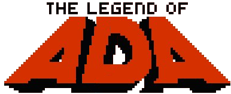

Legend of Ada est un projet réalisé dans le cadre du troisième semestre de DUT Informatique à l'IUT2 de Grenoble.
Il est mené par un groupe de 7 étudiants : Valentin DEBON, Anne GAISNE, Alexis GOUZON, Romain PASDELOUP, Alexandre SALMON, Nathaniel SHERMAN et Antoine TECHER.
Nous remercions Mathilde GAISNE pour la réalisation du logo textuel et de l'avatar Ada.
Le contenu de nos cours provient en grande majorité du livre Myriade, Maths 3e édité chez Bordas.
2018 - Tous droits réservés.